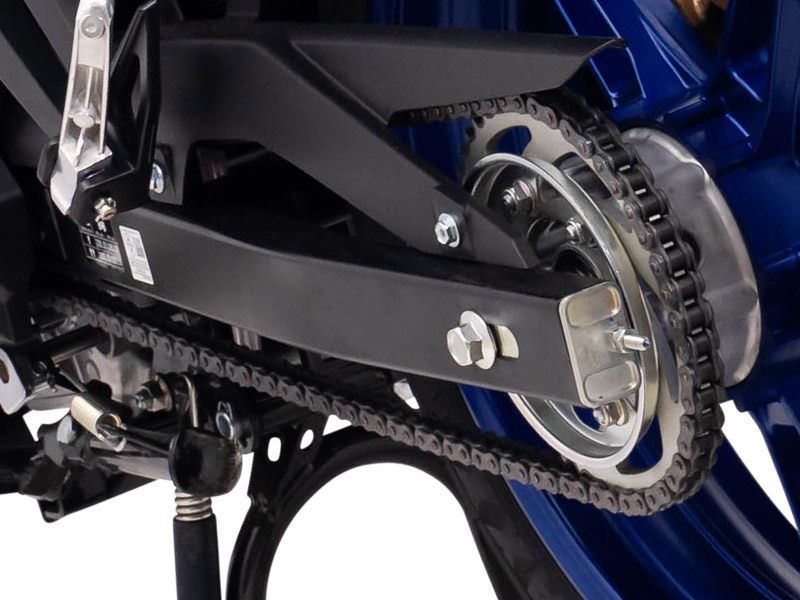

ระบบขับเคลื่อนด้วยโซ่ (Chain Drive)
หลักการทำงานระบบขับเคลื่อนด้วยโซ่
รถมอเตอร์ไซค์ระบบส่งกำลังด้วยโซ่
ระบบส่งกำลังด้วยโซ่เป็นระบบยอดนิยม ที่พบได้ตั้งแต่ในรถมอเตอร์ไซค์บ้านทั่วไปจนถึงซูเปอร์ไบก์ราคาโดยอาศัยการทำงานร่วมกันของโซ่และเฟืองเป็นหลักในการส่งกำลังขับเคลื่อน
ข้อดี
ข้อดี รถมอเตอร์ไซค์ระบบส่งกำลังด้วยโซ่ มีข้อดีตรงที่สูญเสียกำลังขับเคลื่อนน้อย อีกทั้งต้นทุนการผลิตก็ไม่ได้สูงมากเมื่อเทียบกับระบบอื่นๆ ขณะเดียวกันก็เป็นระบบที่มีความแข็งแรง ทนทาน โซ่จะมีอายุการใช้งานที่นานกว่าสายพาน ดูแลรักษาง่าย สามารถทำได้ด้วยตัวเอง เช่น การตั้งโซ่ การหยอดน้ำมันหล่อลื่น การทำความสะอาดโซ่ ฯลฯ และสามารถปรับแต่งอัตราทดได้ง่าย
ข้อสังเกต
ข้อสังเกต อันดับแรกเลยก็คือ ผู้ขับขี่ต้องควบคุมการเปลี่ยนเกียร์เอง และถ้าเจ้าของรถมอเตอร์ไซค์ระบบโซ่ดูแลรักษาไม่ดีจนปล่อยให้โซ่หย่อนหรือโซ่แห้งก็อาจจะมีเสียงดังรบกวนได้เวลาวิ่ง การตั้งโซ่ด้วยตัวเองก็ต้องมีความชำนาญในระดับหนึ่ง เนื่องจากไม่ควรให้โซ่หย่อนหรือตึงจนเกินไป นอกจากนี้อาจเลอะเทอะได้ง่าย เนื่องจากต้องคอยหยอดน้ำมันหล่อลื่นโซ่และยังเป็นระบบเปิด ไม่มีที่ครอบป้องกันหิน ดิน และฝุ่น